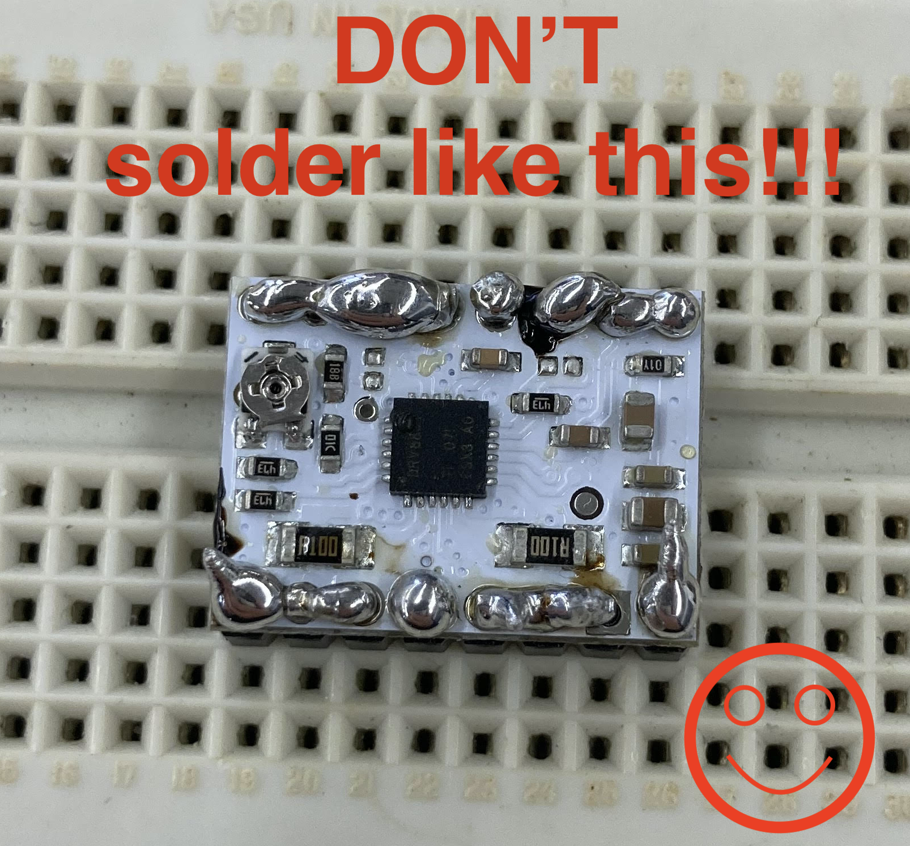

<div class="container-fluid">
<h1> Final Project </h1>
<h2> Wind Compass </h2>
After going through the semester, I've decided that I'd like to make a wind compass for my final project. My hometown (Marion, MA) is near the ocean and Buzzards Bay. It is nearly always windy. I don't sail, but I do like to know the direction from which the wind is coming; the southwest breezes of the summer and the northwest winds of the winter feel quite different! My thinking is that a small-scale wind compass could help sailers or others who need to know the direction of the wind. <br>
For my project, I'm first building a compass, following [this tutorial](https://www.brainy-bits.com/post/build-an-arduino-rgb-led-ring-compass). As you can see in the image below, the compass has a string of LEDs, with the red LED indicating north. Thankfully, given the N, E, S, W orientation of direction, having only one direction is sufficient for knowing the other directions, too. Additionally, the box has the 5883-L module which helps with making compasses using Arduino. <br>
<img src="brainy_bits_box.png"
alt="Brainy Bits Box"
width="720" height="480">
Image source: [Brainy Bits Tutorial Page](https://www.brainy-bits.com/post/build-an-arduino-rgb-led-ring-compass)
<h3> Factoring in the Wind </h3>
Given that compass has a box, I will insert a wind vane through the circle of LED lights. Looking at the box from above, it will be clear both which direction is north and which direction the wind is blowing. <br>
<h2> Starting the Project </h2>
<h3> Making Connections: Soldering Wires onto Pins in the HMC-5883L Module and Circle of LEDs </h3>
First, I wanted to get the compass up and working, so I could figure out the best way to orient the parts and make a box and wind vane to fit the parts needed for the compass (microcontroller, battery holder, HMC-5883L module, circle of LEDs, and wires) rather than fitting the comass parts to the box. The very first step was soddering on the wires to the HMC-5883L module and the circle of LEDs. Here's the picture of the connections from the Brainy Bits page: <br>
<br>
Image source: [Brainy Bits Tutorial Page](https://www.brainy-bits.com/post/build-an-arduino-rgb-led-ring-compass)
I soldered on wires to the pins of the HMC-5883L module and circle of LEDs that I'd need to connect to the microcontroller for the compass. <br>
Here's a picture of the soldered wires onto the HMC-5883L module: <br>
<br>
Here's a picture of the soldered wires onto the circle of LEDs:
<img src="new_wires_on_leds.png"
alt="new_wires_on_leds"
width="720" height="480"> <br>
I'm definitely not the best solderer in the world. Thank you to Gabby for her help with soldering methods, and with desoldering using the copper braid! I originally had too much solder on some of the connections for the circle of LEDs and used the desoldering braid to remove some of the excess so the connections wouldn't be off. Having learned my lesson with the circle of LEDs, I used less solder for the HMC-5883L module, doing my best to ensure that none of the soldering material used to connect the pins connected to any other pins' soldering material. <br>
As a quick side note and illustration of what *not* to do when soldering, below is a picture of one of my attempts from a project earlier this semester. Ibrahim very kindly explained at the time that my soldering "could be improved." Knowing what I know now, sheesh! It sure could! The problem with these connections was that the soldering metal from one pin to another was totally connected so the jumper wires that were meant to connect to specific pins weren't distinctly connected; everything sort of was connected to everything else, which would make the circuit a bit of a mess! <br>
 <br>
<b> Again, what *not* to do! :) </b> <br>
Given that I'd be putting the wires inside of a box and likely moving things around, I wanted to make sure I had some flexibility with the wires. While the wires I'd used initially to link the circle of LEDs and the HMC-5883L module with the microcontroller were totally fine, the wires were a little bit stiff and I just wanted to have some flexibility, especially because I thought I'd be moving them around. To do that, I kept the soldered parts of those wires attached to the circle of LEDs and the HMC-5883L, but snipped the wires much closer to both of those tools and attached a female-male jumper wire to those wires. I chose those wires because they're quite a bit looser and less stiff than the wires I'd used before. This new method would give me some flexibility. <br>
<h3> Making the Box </h3>
<h4> Laser Cutting the Material </h4>
To make the box for the compass, I'd planned to use woodor something like it. I ran the wood through the scroll saw, but the edges weren't exact. I was worried that uneven edges and sizes could make building the box difficult. So, I decided to use different material and laser cut it to make sure the sizes of the boxes were the same. <br>
Below is a video of the laser cutter cutting through the material. I'm not sure exactly what the material is called, but it's sort of a cross between wood and cardboard. A few things I'd say to note about this material. First, it's really tough to laser cut—not in the sense of actual maual labor on our part, it's just that the material is really hard to get through. I had to use 97.5% power and run through the material 6 or 7 times on between 2.5 and 7.5 speed to get the material to a point where I could use an Exacto knife to cut out the squares. Second, and more importantly, <b>Nathan menioned that this material has some glues that aren't great to breathe in, so make sure to let the laser cutter sit for a little while after cutting so the fumes can go away and be careful not to inhale much</b>. <br>
<video width="720" height="480" controls>
<source src="laser_cutting.mov" type="video/mp4">
</video> <br>
<br>
Always fun to watch the laser cutter. <b>Again, be careful when using this material not to inhale and to let the laser cutter absorb any potentially harmful materials that it released while cutting!</b>
I sort of learned the hard way that the laser cutter works best when cutting more than once through material when it can cut the same lines each time. I learned to leave the material in for a few passes through and then try to take it out when I thought I'd be able to get the squares out with an exacto knife rather than having to line up the squares each time so the path would be the same. <br>
<h4> Starting from the Bottom </h4>
I wanted to try to use no metal, or as little metal as possible, because [the tutorial](https://www.brainy-bits.com/post/build-an-arduino-rgb-led-ring-compass) that I followed mentioned that the compass was very affected by metal. So, I decided to glue my box together rather than use nails or anything. I wanted to make sure the box was big enough to fit the power unit, the microcontroller, and the pole for the wind vane. Here's a picture of how the box came out. <br>
<img src="compass_box.png"
alt="compass_box"
width="720" height="480"> <br>
The wooden blocks glued to the bottom of the box are there for the stability of the pole for the wind vane. when I was telling him about my project, one of my blockmates and good friends Jaxson Hill suggested that I use a bearing to hold the stem of the wind vane in place. This was a great idea! The only problem was that having the metal near the compass circuit might complicate things, so I drilled holles into the parts of the box and tried to have them be the right size so the stem could fit and rotate freely, kind of like a bearing, but without metal. Jaxson's idea really helped me with the conceptual part of fitting the pole into the box—thank you, Jaxson! I glued those pieces together and then glued them to the bottom of the box for stability. Here's what the box looks like with the pole of the wind vane inside. The video shows how you can rotate the pole around, but it's still fairly snugly fit inside the holes for the drill. <br>
<video width="720" height="480" controls>
<source src="pole_moving.mov" type="video/mp4">
</video>
<h4> Now We're Here! The Top of the Box </h4>
The parts needed for the top of the box were the HMC-5883L, the LEDs, and a slot for the pole of the wind vane. Like I did for the bottom, I drilled a hole through which I could slide the pole. I did this in the circle of the LEDs to make it as clear as possible which direction the wind is blowing. Here's a photo of the top of the box. <br>
<img src="box_top.png"
alt="box_top"
width="720" height="480"> <br>
Because the HMC-5883L would sometimes slide around a little bit, I used double sided tape to tape it to the top of the box. Here's a picture of the bottom of the box. Notice the woodent blocks glued to the underside of the top of the box to help more with stability and the wires coming out of the bottom. The bottom had definitely been laser cut, but I figured this was a fine sheet of this material to use and because this side would be the bottom, aesthetics weren't a big issue. <br>
<img src="box_top_under.png"
alt="box_top_under"
width="720" height="480"> <br>
<h3> Getting the Compass Up and Running </h3>
<h4> Code </h4>
Once the wires were properly soldered onto both the circle of LEDs and the HMC-5883L module, I tried to get the compass up and running. I was having a lot of trouble with the calibration process. I kept getting completely different calibration numbers when trying to calibrate the compass. Something seemed off, because whenever I'd move the compass around, the LEDs would move in the direction I was moving the compass, rather than staying in place (as they were supposed to continue to point north). <br>
Thankfully, Nathan helped me find new code to use in Arduino to make sure that the compass worked better. Much of the code came from [this website](https://github.com/sleemanj/HMC5883L_Simple/blob/master/HMC5883L_Simple/examples/Compass/Compass.ino). My understanding is that this code helped with setting the declination and calibrating the compass, then telling the LEDs what to do. What had been happening before was that I kept getting different numbers when calibrating. The code I'd use for the final combination of the HMC-5883L and LED lights required a couple of inputs and numbers from calibrating the HMC-5883L.
My code is a combination of code from [this GitHub repository](https://github.com/sleemanj/HMC5883L_Simple/blob/master/HMC5883L_Simple/examples/Compass/Compass.ino) and [this tutorial](https://www.brainy-bits.com/post/build-an-arduino-rgb-led-ring-compass).
Here's the Arduino code that I'm using (the "#include" lines for Arduino.h, Wire.h, HMC5883L_Simple.h, and HMC5883L.h are surrounded by <>'s):
<pre><code>
/*
*
* Compass.ino - Example sketch for reading a heading from an HMC5883L triple axis magnetometer.
*
* GY-273 Compass Module -> Arduino
* VCC -> VCC (See Note Below)
* GND -> GND
* SCL -> A5/SCL, (Use Pin 21 on the Arduino Mega)
* SDA -> A4/SDA, (Use Pin 20 on the Arduino Mega)
* DRDY -> Not Connected (in this example)
*
* Voltage Note
* ~~~~~~~~~~~~
* The GY-273 Board has a 3v3 Regulator on it, and the SDA/SCL are pulled up to that so it is OK to
* use with 5v Arduino's.
*
* If you are using any other breakout, or the raw IC, you need to be using 3v3 to supply and signal!
*
* Datasheet: http://goo.gl/w1criV
*
* Copyright (C) 2014 James Sleeman
*
* Permission is hereby granted, free of charge, to any person obtaining a
* copy of this software and associated documentation files (the "Software"),
* to deal in the Software without restriction, including without limitation
* the rights to use, copy, modify, merge, publish, distribute, sublicense,
* and/or sell copies of the Software, and to permit persons to whom the
* Software is furnished to do so, subject to the following conditions:
*
* The above copyright notice and this permission notice shall be included in
* all copies or substantial portions of the Software.
*
* THE SOFTWARE IS PROVIDED "AS IS", WITHOUT WARRANTY OF ANY KIND, EXPRESS OR
* IMPLIED, INCLUDING BUT NOT LIMITED TO THE WARRANTIES OF MERCHANTABILITY,
* FITNESS FOR A PARTICULAR PURPOSE AND NONINFRINGEMENT. IN NO EVENT SHALL THE
* AUTHORS OR COPYRIGHT HOLDERS BE LIABLE FOR ANY CLAIM, DAMAGES OR OTHER
* LIABILITY, WHETHER IN AN ACTION OF CONTRACT, TORT OR OTHERWISE, ARISING FROM,
* OUT OF OR IN CONNECTION WITH THE SOFTWARE OR THE USE OR OTHER DEALINGS IN
* THE SOFTWARE.
*
* @author James Sleeman, http://sparks.gogo.co.nz/
* @license MIT License
*
*/
#include Arduino.h
#include Wire.h
#include HMC5883L_Simple.h
#include "FastLED.h"
#include HMC5883L.h
// Create a compass
HMC5883L_Simple Compass;
#define NUM_LEDS 16 // Number of LEDs on Ring
#define DATA_PIN_RING 3 // Pin 3 connected to RGB Ring
CRGB leds_RING[NUM_LEDS];
void setup()
{
Serial.begin(9600);
Wire.begin();
FastLED.addLeds<NEOPIXEL, DATA_PIN_RING>(leds_RING, NUM_LEDS);
// Magnetic Declination is the correction applied according to your present location
// in order to get True North from Magnetic North, it varies from place to place.
//
// The declination for your area can be obtained from http://www.magnetic-declination.com/
// Take the "Magnetic Declination" line that it gives you in the information,
//
// Examples:
// Christchurch, 23° 35' EAST
// Wellington , 22° 14' EAST
// Dunedin , 25° 8' EAST
// Auckland , 19° 30' EAST
//
Compass.SetDeclination(-14, 14, 'W');
// The device can operate in SINGLE (default) or CONTINUOUS mode
// SINGLE simply means that it takes a reading when you request one
// CONTINUOUS means that it is always taking readings
// for most purposes, SINGLE is what you want.
Compass.SetSamplingMode(COMPASS_SINGLE);
// The scale can be adjusted to one of several levels, you can probably leave it at the default.
// Essentially this controls how sensitive the device is.
// Options are 088, 130 (default), 190, 250, 400, 470, 560, 810
// Specify the option as COMPASS_SCALE_xxx
// Lower values are more sensitive, higher values are less sensitive.
// The default is probably just fine, it works for me. If it seems very noisy
// (jumping around), incrase the scale to a higher one.
Compass.SetScale(COMPASS_SCALE_130);
// The compass has 3 axes, but two of them must be close to parallel to the earth's surface to read it,
// (we do not compensate for tilt, that's a complicated thing) - just like a real compass has a floating
// needle you can imagine the digital compass does too.
//
// To allow you to mount the compass in different ways you can specify the orientation:
// COMPASS_HORIZONTAL_X_NORTH (default), the compass is oriented horizontally, top-side up. when pointing North the X silkscreen arrow will point North
// COMPASS_HORIZONTAL_Y_NORTH, top-side up, Y is the needle,when pointing North the Y silkscreen arrow will point North
// COMPASS_VERTICAL_X_EAST, vertically mounted (tall) looking at the top side, when facing North the X silkscreen arrow will point East
// COMPASS_VERTICAL_Y_WEST, vertically mounted (wide) looking at the top side, when facing North the Y silkscreen arrow will point West
Compass.SetOrientation(COMPASS_HORIZONTAL_X_NORTH);
}
float heading;
// Our main program loop.
void loop()
{
float heading = Compass.GetHeadingDegrees() - 30;
Serial.print("Heading: \t");
Serial.println( heading );
delay(1000);
// subtract 30 from heading
int headvalue = heading / 18;
int ledtoheading = map(headvalue, 0, 15, 15, 0);
FastLED.clear();
if (ledtoheading == 0) {
leds_RING[15] = CRGB::Red;
leds_RING[0] = CRGB::Green;
leds_RING[14] = CRGB::Green;
}
else {
if (ledtoheading == 15) {
leds_RING[0] = CRGB::Red;
leds_RING[15] = CRGB::Green;
leds_RING[1] = CRGB::Green;
}
else {
leds_RING[ledtoheading] = CRGB::Red;
leds_RING[ledtoheading + 1] = CRGB::Green;
leds_RING[ledtoheading - 1] = CRGB::Green;
}
}
FastLED.setBrightness(50);
FastLED.show();
delay(100);
}
</code></pre>
Here's my general understanding of the code. The first few lines are setting up libraries, as usual. Then, we define the number of LEDs in the <code>NUM_LEDS 16</code> line. We then tell the microcontroller that pin 3 is connected to the microcontroller from the LEDs. Then, we start a monitor of the data coming from the HMC-5883L module. We get the declination from the http://www.magnetic-declination.com/ website. The comments in the line explain most of the code better than I can, but we explain that we want to see the data only when we request that information, the scale explains how sensitive the HMC-5883L is, and we set the orientation such that the X side of the HMC-5883L module so that when X points north, that's what we'll see on the compass. <br>
Then, we set the <code>heading</code> as the reading that we want, and print that number. We subtract 30 in the <code>float heading = Compass.GetHeadingDegrees() - 30;</code>line because Nathan and I noticed that the readings seemed about 30 degrees off when looking at them in the serial monitor. We then map the data that we get from the HMC-5883L onto the LEDs, surrounding the red LED with two green LEDs. Lastly, we choose the brightness and make a quick delay so that the readings are not constant, but still come often enough. <br>
<h4> Trying Out the Compass </h4>
Though the LEDs can be a bit laggy at times and do not always seem 100% accurate, the compass is working better than it was previously. Here's a photo of the compass. The red light is supposed to point to the north. Here, it worked pretty well! I put my phone next to the compass to see where that said north was, and they're pretty similar! <br>
<img src="compass_demo.png"
alt="compass_demo"
width="720" height="480"> <br>
Underneath the LEDs and the HMC5883L module above would be the power unit (pictured below). <br>
<img src="power_unit.png"
alt="power_unit"
width="720" height="480"> <br>
Here's a video of the compass moving around. <br>
<video width="720" height="480" controls>
<source src="compass_rotation.mov" type="video/mp4">
</video> <br>
<br>
Now, that was a 180 degree rotation. You can see the LEDs on the circle return to pretty close to there original position after the rotations. That seemed to point to north quite well. When moving the box around less than 180 degrees or some other number, the compass seemed to have more problems. I think that this has something to do with the orientation of the HMC-5883L. The compass seems to "like" when the X side of the module is facing north, or when it's facing south. It seems to "not like" when the X side is facing east or west. When that was the case, the LEDs actually seemed to point more south rather than north. Here's a close up of the HMC-5883L; you can see the X, Y, and Z sides of the board. <br>
<br>
However, the compass runs with at least some consistency. I also think that the compass might to do better with larger jumps rather than small incremental rotations. I'm not sure exactly why this is, but it seems to me like the compass is most accurate when moving in 180 degree turns after it starts facing north. <br>
I think that the <code>Compass.SetOrientation(COMPASS_HORIZONTAL_X_NORTH);</code> has something to do with why the compass seems to work best when X is pointing north. My gut tells me that a decent strategy to find north would be to find the point at which the LED is aligned as closely as possible with the X direction of the HMC-5883L module. I think that the X side of the HMC-5883L might have the strongest indicator of north, so I think that might be a good strategy. The compass is definitely not incredibly consistent and that may have to do with the metal in the room or an issue with the code/parts, but I think it's better than it was before and I think the matching X direction strategy might work. <br>
<h3> Ice in the (Wind) Vanes: Making the Wind Vane </h3>
I think the components for a wind vane are quite simple: You need a part that will get blown in the direction that the wind is going, an arrow pointing in the opposite direction that will show where the wind is coming *from*, and something to connect those two things. For my wind vane, I 3D printed the pole that would connect those two parts. Here's what that process looked like. <br>
<h4> Building the Connecting Part for the Wind Vane</h4>
I'd originally planned to 3D print the entire wind vane, but the printer kept having errors when trying to print what I'd originally had. I think that had to do with its geometry. Then, I realized that I could make the block that would absorb the wind and the arrow that could point the cirection that the wind was blowing with wood. <br>
Here are some pictures of the body of the wind vane in Fusion: <br>
<br>
<br>
The hole in the bottom part of the box was for the pole of the wind vane. This was actually one of the best parts of the project. Like I mentioned earlier in the section on Making the Box, the drill part that I found allowed me to rotate the wooden pole around without it being too snug or too loose. That came out pretty well. For this part of the wind vein, I was anticipating gluing the part of the pole that would connect to this piece. However, when I tried putting the pole into the hole for that piece, it was neealy a perfect press fit—no glue needed! I went up an extra .5 mm for the size of the hole in Fusion; I'm not sure if that made any difference, but the fit is just right! No need to glue, and it sticks really well. You can also take it off if needed! This was really helpful because if I'd used wood for this part, I think I would have had to glue the pole into that, which may or may not have stuck too well. It was nice having the customization element of Fusion and 3D printing. <br>
After designing this piece in Fusion, I exported the .3mf file to Prusa to eventually get the G-code for the 3D printer. Here are the photos of the part in Prusa: <br>
The view without layers: <br>
<img src="prusa_without_layers.png"
alt="prusa_without_layers"
width="720" height="480"> <br>
The view with layers: <br>
<br>
As a quick note, thank you to Jenny for letting me borrow her USB-C to SD card adapter! Once I had the G-Code loaded onto the SD card, I could start printing. Here's a video of that (always fun to watch I think): <br>
<video width="720" height="480" controls>
<source src="body_of_wind_vane_printing.mov" type="video/mp4">
</video> <br>
<h4> Building the Arrow and Block of the Wind Vane </h4>
For these two parts of the wind vane, I used wood and glued them onto the body of the wind vane (which I 3D printed). I sawed off a block of some wood we had in the shop for the block and then sawed off another block. I used the sander to angle the edges of the arrow so that the block would look like an arrow! <br>
Here's a photo of the tip of the arrow. <br>
<img src="arrow.png"
alt="arrow"
width="720" height="480"> <br>
Just as a quick fun note, to dry the glue for the arrow, I wanted to make sure that the arrow would connect strongly and also be centered on the body of the wind vane. Like I'd done previously, I used little cups of water to ensure that the block for the arrow would be balanced. The angle of these cups came up really handy for me both when constructing my box and when gluing the arrow on. I filled the cups with water to give them some weight and that allowed both sides to support each other. Here's a picture! <br>
<img src="drying_wind_vane.png"
alt="drying_wind_vane"
width="720" height="480"> <br>
Drying can be fun sometimes! :) <br>
You can see the block in the bottom part of the photo above. I'd glued and dried that part before gluing and drying the arrow part of the wind vane, so perhaps that helped give the arrow maximum stability while drying the arrow. I do wonder, though, if I could have simply dried them both at the same time. Either way, it wasn't a big deal, and the cups helped a lot. <br>
<h3> The Big Reveal! </h3>
Now that I had all the components necessary (the box, the HMC-5883L, the LEDs, the microcontroller, the power unit, and the wind vane), I could put it all together! Here's what the whole thing looks like. <br>
<img src="wind_compass.png"
alt="wind_compass"
width="720" height="480"> <br>
<!--
<video width="720" height="480" controls>
<source src="initial_controlling_brightness.mov" type="video/mp4">
</video>
<img src="a_logo_metal.png"
alt="Arduino Example Setup"
width="720" height="480">
-->
<h3> Thank Yous </h3>
Thank you so much to the entire teaching staff for their help with this project. I'm incredibly grateful for all of your help with this project and throughout the semester.
<h3> Helpful Links </h3>
Provided much of the code I used to make the compass: https://github.com/sleemanj/HMC5883L_Simple/blob/master/HMC5883L_Simple/examples/Compass/Compass.ino <br>
I followed this tutorial for much of my project: https://www.brainy-bits.com/post/build-an-arduino-rgb-led-ring-compass <br>
Premiere Pro Help (all of the following links until mentioned otherwise):
https://blog.pond5.com/8629-how-to-create-video-titles-in-adobe-premiere-pro/ <br>
https://www.youtube.com/watch?v=V5sENw2C97s <br>
https://helpx.adobe.com/premiere-pro/using/transition-overview-applying-transitions.html <br>
https://www.youtube.com/watch?v=JfWQAISeZjw&ab_channel=2LoL <br>
https://www.evercast.us/blog/how-to-crop-a-video-in-premiere <br>
https://filtergrade.com/delete-audio-in-premiere-pro-cc/ <br>
https://www.mediacollege.com/adobe/premiere/pro/effects/effect-controls-window.html <br>
https://www.youtube.com/watch?v=vUr_09_-_yw <br>
https://www.youtube.com/watch?v=gPaIyzIX4eU&ab_channel=RobNunn <br>
https://www.youtube.com/watch?v=FYDa5ACSko4 <br>
https://democreator.wondershare.com/video-editor/how-to-resize-video-in-premiere.html <br>
### For Fun: Idea #1 (Not My Actual Final Project): Pizza Spreader
<h3> My original Final Project proposal from the first week of class </h3>
In my final project, I plan to build a tool that can help people spread pizza sauce evenly on their homemade pizza. Though many restaurants have proper tools to ensure that chefs can evenly spread the sauce on their pizzas, the tool I plan to build could help people who are making their pizza at home, not requiring them to have other restaurant-quality cooking equipment. Given that the pandemic has prompted people to learn how to make foods and other items that they may have bought previously, my hope is that this can make the prospect of making pizza at home more enjoyable for those who choose to cook in their homes. I have seen an industrial type machine that spreads pizza evenly, but none designed for in-home, more personal use. <br>
<br>
The way I envision the tool working is that there is a center pole with a rotating wing that goes around in a circle spreading the sauce. The center pole goes in the middle of the pizza and the wing that circles around has an adjustable end, which users can adjust to fit the size of their pizza. To enusre that the pizza sauce does not go wider than intended, the end of the wing is bent to limit the edge of the circle to the desired circumference. Users can put a certain amount of sauce in front of the wing and then turn the tool on, starting the spread of the pizza around the dough, letting it spread until even across the pizza.<br>
<br>
I would like the center pole to be as small as possible to ensure that people can spread the sauce around the maximum area of the pizza with as little need to spread the middle as possible. Ideally, I would like to build an attachment to the center pole to make the tool taller and adjustable to whatever one is spreading, such as frosting on a three layer cake. <br>
Here is a simple diagram of what I envision for the tool: